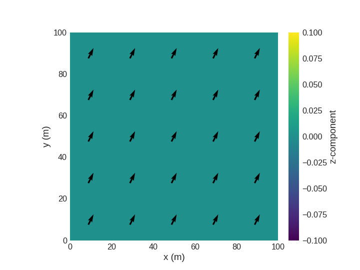

Field#
- class discretisedfield.Field(mesh, nvdim=None, value=0.0, norm=None, vdims=None, dtype=None, unit=None, valid=True, vdim_mapping=None, **kwargs)#
Finite-difference field.
This class specifies a finite-difference field and defines operations for its analysis and visualisation. The field is defined on a finite-difference mesh (discretisedfield.Mesh) passed using
mesh. Another value that must be passed is the dimension of the field’s value usingnvdim. For instance, for a scalar field,nvdim=1and for a three-dimensional vector fieldnvdim=3must be passed. The value of the field can be set by passingvalue. For details on how the value can be defined, refer todiscretisedfield.Field.value. Similarly, if the field hasnvdim>1, the field can be normalised by passingnorm. For details on setting the norm, please refer todiscretisedfield.Field.norm.- Parameters:
mesh (discretisedfield.Mesh) – Finite-difference rectangular mesh.
nvdim (int) – Number of Value dimensions of the field. For instance, if nvdim=3 the field is a three-dimensional vector field and for nvdim=1 the field is a scalar field.
value (array_like, callable, dict, optional) – Please refer to
discretisedfield.Field.valueproperty. Defaults to 0, meaning that if the value is not provided in the initialisation, “zero-field” will be defined.norm (numbers.Real, callable, optional) – Please refer to
discretisedfield.Field.normproperty. Defaults toNone(norm=Nonedefines no norm).dtype (str, type, np.dtype, optional) – Data type of the underlying numpy array. If not specified the best data type is automatically determined if
valueis array_like, for callable and dictvaluethe numpy default (currentlyfloat64) is used. Defaults toNone.unit (str, optional) – Physical unit of the field.
valid (numpy.ndarray, str, optional) – Property used to mask invalid values of the field. Please refer to
discretisedfield.Field.valid. Defaults toTrue.vdim_mapping (dict, optional) – Dictionary that maps value dimensions to the spatial dimensions. It defaults to the same as spatial dimensions if the number of value and spatial dimensions are the same, else it is empty.
Examples
1. Defining a uniform three-dimensional vector field on a nano-sized thin film.
>>> import discretisedfield as df ... >>> p1 = (-50e-9, -25e-9, 0) >>> p2 = (50e-9, 25e-9, 5e-9) >>> cell = (1e-9, 1e-9, 0.1e-9) >>> mesh = df.Mesh(region=df.Region(p1=p1, p2=p2), cell=cell) >>> nvdim = 3 >>> value = (0, 0, 1) ... >>> field = df.Field(mesh=mesh, nvdim=nvdim, value=value) >>> field Field(...) >>> field.mean() array([0., 0., 1.])
Defining a scalar field.
>>> p1 = (-10, -10, -10) >>> p2 = (10, 10, 10) >>> n = (1, 1, 1) >>> mesh = df.Mesh(p1=p1, p2=p2, n=n) >>> nvdim = 1 >>> value = 3.14 ... >>> field = df.Field(mesh=mesh, nvdim=nvdim, value=value) >>> field Field(...) >>> field.mean() array([3.14])
Defining a uniform three-dimensional normalised vector field.
>>> import discretisedfield as df ... >>> p1 = (-50e9, -25e9, 0) >>> p2 = (50e9, 25e9, 5e9) >>> cell = (1e9, 1e9, 0.1e9) >>> mesh = df.Mesh(region=df.Region(p1=p1, p2=p2), cell=cell) >>> nvdim = 3 >>> value = (0, 0, 8) >>> norm = 1 ... >>> field = df.Field(mesh=mesh, nvdim=nvdim, value=value, norm=norm) >>> field Field(...) >>> field.mean() array([0., 0., 1.])
See also
Methods
Absolute value of the field.
Binary
+operator.__and__Field class support for numpy
ufuncs.Sample the field value at
point.Extension of the
dir(self)list.Relational operator
==.Extract the component of the vector field.
Extracts the field on a subregion.
Generator yielding field values of all discretisation cells.
Stacks multiple scalar fields in a single vector field.
__matmul__Binary
*operator.Unary
-operator.Unary
+operator.Unary
**operator.Representation string.
Binary
-operator.Binary
/operator.Allclose method.
Angle between two vectors.
Cross product.
Directional derivative.
Dot product.
Performs an N-dimensional discrete Fast Fourier Transform (FFT) on the field.
from_fileRead a field from an OVF (1.0 or 2.0), VTK, or HDF5 file.
Create
discretisedfield.Fieldfromxarray.DataArrayfromfilePerforms an N-dimensional discrete inverse Fast Fourier Transform (iFFT) on the field.
Integral.
Performs an N-dimensional discrete inverse real Fast Fourier Transform (irFFT) on the field.
is_same_vectorspaceSample the field along the line.
Field mean.
Field padding.
Resample field.
Performs an N-dimensional discrete real Fast Fourier Transform (rFFT) on the field.
Rotate field and underlying mesh by 90°.
Select a part of the field.
to_fileWrite the field to OVF, HDF5, or VTK file.
Convert field to vtk rectilinear grid.
Field value as
xarray.DataArray.Set field value representation.
Properties
dtypeAbsolute value of complex field.
Field value as
numpy.ndarray.Complex conjugate of complex field.
Curl.
Compute the divergence of a field.
Gradient.
Plot interface, Holoviews/hvplot based.
Imaginary part of complex field.
Plot interface, k3d based.
Laplace operator.
The mesh on which the field is defined.
Plot interface, matplotlib based.
Norm of the field.
Number of value dimensions.
Orientation field.
Phase of complex field.
Plot interface, pyvista based.
Real part of complex field.
Unit of the field.
Valid field values.
Map vdims to dims.
Vector components of the field.
- __abs__()#
Absolute value of the field.
This is a convenience operator and it returns absolute value of the field.
- Returns:
Absolute value of the field.
- Return type:
Examples
Computing the absolute value of a scalar field.
>>> import discretisedfield as df ... >>> p1 = (0, 0, 0) >>> p2 = (5, 10, 13) >>> cell = (1, 1, 1) >>> mesh = df.Mesh(region=df.Region(p1=p1, p2=p2), cell=cell) ... >>> field = df.Field(mesh=mesh, nvdim=1, value=-5) >>> abs(field).mean() array([5.])
See also
- __add__(other)#
Binary
+operator.It can be applied between two
discretisedfield.Fieldobjects or between adiscretisedfield.Fieldobject and a “constant”. For instance if the field is a scalar field, a scalar field ornumbers.Realcan be the second operand. Similarly, for a vector field, either vector field or an iterable, such astuple,list, ornumpy.ndarray, can be the second operand. If the second operand is adiscretisedfield.Fieldobject, both must be defined on the same mesh and have the same dimensions.- Parameters:
other (discretisedfield.Field, numbers.Real, tuple, list, np.ndarray) – Second operand.
- Returns:
Resulting field.
- Return type:
- Raises:
ValueError, TypeError – If the operator cannot be applied.
Example
Add vector fields.
>>> import discretisedfield as df ... >>> p1 = (0, 0, 0) >>> p2 = (5, 3, 1) >>> cell = (1, 1, 1) >>> mesh = df.Mesh(p1=p1, p2=p2, cell=cell) ... >>> f1 = df.Field(mesh, nvdim=3, value=(0, -1, -3.1)) >>> f2 = df.Field(mesh, nvdim=3, value=(0, 1, 3.1)) >>> res = f1 + f2 >>> res.mean() array([0., 0., 0.]) >>> f1 + f2 == f2 + f1 True >>> res = f1 + (1, 2, 3.1) >>> res.mean() array([1., 1., 0.]) >>> (f1 + 5).mean() array([5. , 4. , 1.9])
See also
- __array_ufunc__(ufunc, method, *inputs, **kwargs)#
Field class support for numpy
ufuncs.
- __call__(point)#
Sample the field value at
point.It returns the value of the field in the discretisation cell to which
pointbelongs to. It returns a tuple, whose length is the same as the dimension (nvdim) of the field.- Parameters:
point (array_like) – For example, in three dimensions, the mesh point coordinate \(\mathbf{p} = (p_{x}, p_{y}, p_{z})\).
- Returns:
A tuple, whose length is the same as the dimension of the field.
- Return type:
tuple
Example
Sampling the field value.
>>> import discretisedfield as df ... >>> p1 = (0, 0, 0) >>> p2 = (20, 20, 20) >>> n = (20, 20, 20) >>> mesh = df.Mesh(region=df.Region(p1=p1, p2=p2), n=n) ... >>> field = df.Field(mesh, nvdim=3, value=(1, 3, 4)) >>> point = (10, 2, 3) >>> field(point) array([1., 3., 4.])
- __dir__()#
Extension of the
dir(self)list.Adds component labels to the
dir(self)list. Similarly, adds or removes methods (grad,div,…) depending on the dimension of the field.- Returns:
Avalilable attributes.
- Return type:
list
- __eq__(other)#
Relational operator
==.Two fields are considered to be equal if:
They are defined on the same mesh.
They have the same number of value dimensions (
nvdim).They both contain the same values in
array.
- Parameters:
other (discretisedfield.Field) – Second operand.
- Returns:
Trueif two fields are equal,Falseotherwise.- Return type:
bool
Examples
Check if two fields are (not) equal.
>>> import discretisedfield as df ... >>> mesh = df.Mesh(p1=(0, 0, 0), p2=(5, 5, 5), cell=(1, 1, 1)) ... >>> f1 = df.Field(mesh, nvdim=1, value=3) >>> f2 = df.Field(mesh, nvdim=1, value=4-1) >>> f3 = df.Field(mesh, nvdim=3, value=(1, 4, 3)) >>> f1 == f2 True >>> f1 != f2 False >>> f1 == f3 False >>> f1 != f3 True >>> f2 == f3 False >>> f1 == 'a' False
- __getattr__(attr)#
Extract the component of the vector field.
This method provides access to individual field components for fields with dimension > 1. Component labels are defined in the
vdimsattribute. For dimension 2 and 3 default values'x','y', and'z'are used if no custom component labels are provided. For fields withnvdim>3vdims must be specified manually to get access to individual vector components.- Parameters:
attr (str) – Vector field component defined in
vdims.- Returns:
Scalar field with vector field component values.
- Return type:
Examples
Accessing the default vector field vdims.
>>> import discretisedfield as df ... >>> p1 = (0, 0, 0) >>> p2 = (2, 2, 2) >>> cell = (1, 1, 1) >>> mesh = df.Mesh(p1=p1, p2=p2, cell=cell) ... >>> field = df.Field(mesh=mesh, nvdim=3, value=(0, 0, 1)) >>> field.x Field(...) >>> field.x.mean() array([0.]) >>> field.y Field(...) >>> field.y.mean() array([0.]) >>> field.z Field(...) >>> field.z.mean() array([1.]) >>> field.z.nvdim 1
Accessing custom vector field vdims.
>>> import discretisedfield as df ... >>> p1 = (0, 0, 0) >>> p2 = (2, 2, 2) >>> cell = (1, 1, 1) >>> mesh = df.Mesh(p1=p1, p2=p2, cell=cell) ... >>> field = df.Field(mesh=mesh, nvdim=3, value=(0, 0, 1), ... vdims=['mx', 'my', 'mz']) >>> field.mx Field(...) >>> field.mx.mean() array([0.]) >>> field.my Field(...) >>> field.my.mean() array([0.]) >>> field.mz Field(...) >>> field.mz.mean() array([1.]) >>> field.mz.nvdim 1
- __getitem__(item)#
Extracts the field on a subregion.
If subregions were defined by passing
subregionsdictionary when the mesh was created, this method returns a field in a subregionsubregions[item]. Alternatively, adiscretisedfield.Regionobject can be passed and a minimum-sized field containing it will be returned. The resulting mesh has the same discretisation cell as the original field’s mesh.- Parameters:
item (str, discretisedfield.Region) – The key of a subregion in
subregionsdictionary or a region object.- Returns:
Field on a subregion.
- Return type:
disretisedfield.Field
Example
Extract field on the subregion by passing a key.
>>> import discretisedfield as df ... >>> p1 = (0, 0, 0) >>> p2 = (100, 100, 100) >>> cell = (10, 10, 10) >>> subregions = {'r1': df.Region(p1=(0, 0, 0), p2=(50, 100, 100)), ... 'r2': df.Region(p1=(50, 0, 0), p2=(100, 100, 100))} >>> mesh = df.Mesh(p1=p1, p2=p2, cell=cell, subregions=subregions) >>> def value_fun(point): ... x, y, z = point ... if x <= 50: ... return (1, 2, 3) ... else: ... return (-1, -2, -3) ... >>> f = df.Field(mesh, nvdim=3, value=value_fun) >>> f.mean() array([0., 0., 0.]) >>> f['r1'] Field(...) >>> f['r1'].mean() array([1., 2., 3.]) >>> f['r2'].mean() array([-1., -2., -3.])
Extracting a subfield by passing a region.
>>> import discretisedfield as df ... >>> p1 = (-50e-9, -25e-9, 0) >>> p2 = (50e-9, 25e-9, 5e-9) >>> cell = (5e-9, 5e-9, 5e-9) >>> region = df.Region(p1=p1, p2=p2) >>> mesh = df.Mesh(region=region, cell=cell) >>> field = df.Field(mesh=mesh, nvdim=1, value=5) ... >>> subregion = df.Region(p1=(-9e-9, -1e-9, 1e-9), ... p2=(9e-9, 14e-9, 4e-9)) >>> subfield = field[subregion] >>> subfield.array.shape (4, 4, 1, 1)
- __iter__()#
Generator yielding field values of all discretisation cells.
- Yields:
np.ndarray – The field value in one discretisation cell.
Examples
Iterating through the field values
>>> import discretisedfield as df ... >>> p1 = (0, 0, 0) >>> p2 = (2, 2, 1) >>> cell = (1, 1, 1) >>> mesh = df.Mesh(p1=p1, p2=p2, cell=cell) ... >>> field = df.Field(mesh, nvdim=3, value=(0, 0, 1)) >>> for value in field: ... print(value) [0. 0. 1.] [0. 0. 1.] [0. 0. 1.] [0. 0. 1.]
Iterating through the mesh coordinates and field values
>>> import discretisedfield as df ... >>> p1 = (0, 0, 0) >>> p2 = (2, 2, 1) >>> cell = (1, 1, 1) >>> mesh = df.Mesh(p1=p1, p2=p2, cell=cell) ... >>> field = df.Field(mesh, nvdim=3, value=(0, 0, 1)) >>> for coord, value in zip(field.mesh, field): ... print(coord, value) [0.5 0.5 0.5] [0. 0. 1.] [1.5 0.5 0.5] [0. 0. 1.] [0.5 1.5 0.5] [0. 0. 1.] [1.5 1.5 0.5] [0. 0. 1.]
See also
- __lshift__(other)#
Stacks multiple scalar fields in a single vector field.
This method takes a list of scalar (
nvdim=1) fields and returns a vector field, whose components are defined by the scalar fields passed. If any of the fields passed hasnvdim!=1or they are not defined on the same mesh, an exception is raised. The dimension of the resulting field is equal to the length of the passed list.- Parameters:
fields (list) – List of
discretisedfield.Fieldobjects, each withnvdim=1.- Returns:
Resulting field.
- Return type:
disrectisedfield.Field
- Raises:
ValueError – If the dimension of any of the fields is not 1, or the fields passed are not defined on the same mesh.
Example
Stack 3 scalar fields.
>>> import discretisedfield as df ... >>> p1 = (0, 0, 0) >>> p2 = (10, 10, 10) >>> cell = (2, 2, 2) >>> mesh = df.Mesh(p1=p1, p2=p2, cell=cell) ... >>> f1 = df.Field(mesh, nvdim=1, value=1) >>> f2 = df.Field(mesh, nvdim=1, value=5) >>> f3 = df.Field(mesh, nvdim=1, value=-3) ... >>> f = f1 << f2 << f3 >>> f.mean() array([ 1., 5., -3.]) >>> f.nvdim 3 >>> f.x == f1 True >>> f.y == f2 True >>> f.z == f3 True
- __mul__(other)#
Binary
*operator.It can be applied between:
Two fields with equal vector dimensions
nvdim,A field of any dimension
nvdimandnumbers.Complex,A field of any dimension
nvdimand a scalar (nvdim=1) field.
If both operands are
discretisedfield.Fieldobjects, they must be defined on the same mesh.- Parameters:
other (discretisedfield.Field, numbers.Real) – Second operand.
- Returns:
Resulting field.
- Return type:
- Raises:
ValueError, TypeError – If the operator cannot be applied.
Example
Multiply two scalar fields.
>>> import discretisedfield as df ... >>> p1 = (0, 0, 0) >>> p2 = (10, 10, 10) >>> cell = (2, 2, 2) >>> mesh = df.Mesh(p1=p1, p2=p2, cell=cell) ... >>> f1 = df.Field(mesh, nvdim=1, value=5) >>> f2 = df.Field(mesh, nvdim=1, value=9) >>> res = f1 * f2 >>> res.mean() array([45.]) >>> f1 * f2 == f2 * f1 True
Multiply vector field with a scalar.
>>> f1 = df.Field(mesh, nvdim=3, value=(0, 2, 5)) ... >>> res = f1 * 5 # discretisedfield.Field.__mul__ is called >>> res.mean() array([ 0., 10., 25.]) >>> res = 10 * f1 # discretisedfield.Field.__rmul__ is called >>> res.mean() array([ 0., 20., 50.])
See also
- __neg__()#
Unary
-operator.This method negates the value of each discretisation cell. It is equivalent to multiplication with -1:
\[-f(x, y, z) = -1 \cdot f(x, y, z)\]- Returns:
Field multiplied with -1.
- Return type:
Example
Applying unary
-operator on a scalar field.
>>> import discretisedfield as df ... >>> p1 = (0, 0, 0) >>> p2 = (5e-9, 3e-9, 1e-9) >>> n = (10, 5, 1) >>> mesh = df.Mesh(p1=p1, p2=p2, n=n) ... >>> f = df.Field(mesh, nvdim=1, value=3.1) >>> res = -f >>> res.mean() array([-3.1]) >>> f == -(-f) True
Applying unary negation operator on a vector field.
>>> f = df.Field(mesh, nvdim=3, value=(0, -1000, -3)) >>> res = -f >>> res.mean() array([ 0., 1000., 3.])
- __pos__()#
Unary
+operator.This method defines the unary operator
+. It returns the field itself:\[+f(x, y, z) = f(x, y, z)\]- Returns:
Field itself.
- Return type:
Example
Applying unary
+operator on a field.
>>> import discretisedfield as df ... >>> p1 = (0, 0, 0) >>> p2 = (5e-9, 5e-9, 5e-9) >>> n = (10, 10, 10) >>> mesh = df.Mesh(p1=p1, p2=p2, n=n) ... >>> f = df.Field(mesh, nvdim=3, value=(0, -1000, -3)) >>> res = +f >>> res.mean() array([ 0., -1000., -3.]) >>> res == f True >>> +(+f) == f True
- __pow__(other)#
Unary
**operator.This method defines the
**operator for scalar (nvdim=1) fields only. This operator is not defined for vector (nvdim>1) fields, andValueErroris raised.- Parameters:
other (numbers.Real) – Value to which the field is raised.
- Returns:
Resulting field.
- Return type:
- Raises:
ValueError, TypeError – If the operator cannot be applied.
Example
Applying unary
**operator on a scalar field.
>>> import discretisedfield as df ... >>> p1 = (-25e-3, -25e-3, -25e-3) >>> p2 = (25e-3, 25e-3, 25e-3) >>> n = (10, 10, 10) >>> mesh = df.Mesh(region=df.Region(p1=p1, p2=p2), n=n) ... >>> f = df.Field(mesh, nvdim=1, value=2) >>> res = f**(-1) >>> res Field(...) >>> res.mean() array([0.5]) >>> res = f**2 >>> res.mean() array([4.]) >>> (f**f).mean() array([4.])
Attempt to apply power operator on a vector field.
>>> p1 = (0, 0, 0) >>> p2 = (5e-9, 5e-9, 5e-9) >>> n = (10, 10, 10) >>> mesh = df.Mesh(p1=p1, p2=p2, n=n) ... >>> f = df.Field(mesh, nvdim=3, value=(0, -1, -3)) >>> (f**2).mean() array([0., 1., 9.])
- __repr__()#
Representation string.
Internally self._repr_html_() is called and all html tags are removed from this string.
- Returns:
Representation string.
- Return type:
str
Example
Getting representation string.
>>> import discretisedfield as df ... >>> p1 = (0, 0, 0) >>> p2 = (2, 2, 1) >>> cell = (1, 1, 1) >>> mesh = df.Mesh(p1=p1, p2=p2, cell=cell) ... >>> field = df.Field(mesh, nvdim=1, value=1) >>> field Field(...)
- __sub__(other)#
Binary
-operator.It can be applied between two
discretisedfield.Fieldobjects or between adiscretisedfield.Fieldobject and a “constant”. For instance if the field is a scalar field, a scalar field ornumbers.Realcan be the second operand. Similarly, for a vector field, either vector field or an iterable, such astuple,list, ornumpy.ndarray, can be the second operand. If the second operand is adiscretisedfield.Fieldobject, both must be defined on the same mesh and have the same dimensions.- Parameters:
other (discretisedfield.Field, numbers.Real, tuple, list, np.ndarray) – Second operand.
- Returns:
Resulting field.
- Return type:
- Raises:
ValueError, TypeError – If the operator cannot be applied.
Example
Subtract vector fields.
>>> import discretisedfield as df ... >>> p1 = (0, 0, 0) >>> p2 = (5, 3, 1) >>> cell = (1, 1, 1) >>> mesh = df.Mesh(p1=p1, p2=p2, cell=cell) ... >>> f1 = df.Field(mesh, nvdim=3, value=(0, 1, 6)) >>> f2 = df.Field(mesh, nvdim=3, value=(0, 1, 3)) >>> res = f1 - f2 >>> res.mean() array([0., 0., 3.]) >>> f1 - f2 == -(f2 - f1) True >>> res = f1 - (0, 1, 0) >>> res.mean() array([0., 0., 6.])
See also
- __truediv__(other)#
Binary
/operator.It can be applied between:
Two fields with equal vector dimensions
nvdim,A field of any dimension
nvdimandnumbers.Complex,A field of any dimension
nvdimand a scalar (nvdim=1) field.
If both operands are
discretisedfield.Fieldobjects, they must be defined on the same mesh.- Parameters:
other (discretisedfield.Field, numbers.Real) – Second operand.
- Returns:
Resulting field.
- Return type:
- Raises:
ValueError, TypeError – If the operator cannot be applied.
Example
Divide two scalar fields.
>>> import discretisedfield as df ... >>> p1 = (0, 0, 0) >>> p2 = (10, 10, 10) >>> cell = (2, 2, 2) >>> mesh = df.Mesh(p1=p1, p2=p2, cell=cell) ... >>> f1 = df.Field(mesh, nvdim=1, value=100) >>> f2 = df.Field(mesh, nvdim=1, value=20) >>> res = f1 / f2 >>> res.mean() array([5.]) >>> (f1 / f2).allclose((f2 / f1)**(-1)) True
Divide vector field by a scalar.
>>> f1 = df.Field(mesh, nvdim=3, value=(20, 10, 5)) >>> res = f1 / 5 # discretisedfield.Field.__mul__ is called >>> res.mean() array([4., 2., 1.]) >>> (10 / f1).mean() array([0.5, 1. , 2. ])
See also
- allclose(other, rtol=1e-05, atol=1e-08)#
Allclose method.
This method determines whether two fields are:
Defined on the same mesh.
Have the same number of value dimension (
nvdim).
3. All values in are within relative (
rtol) and absolute (atol) tolerances.- Parameters:
other (discretisedfield.Field) – Field to be compared to.
rtol (numbers.Real) – Relative tolerance. Defaults to 1e-5.
atol (numbers.Real) – Absolute tolerance. Defaults to 1e-8.
- Returns:
Trueif two fields are within tolerance,Falseotherwise.- Return type:
bool
- Raises:
TypeError – If a non field object is passed.
Examples
Check if two fields are within a tolerance.
>>> import discretisedfield as df ... >>> mesh = df.Mesh(p1=(0, 0, 0), p2=(5, 5, 5), cell=(1, 1, 1)) ... >>> f1 = df.Field(mesh, nvdim=1, value=3) >>> f2 = df.Field(mesh, nvdim=1, value=3+1e-9) >>> f3 = df.Field(mesh, nvdim=1, value=3.1) >>> f1.allclose(f2) True >>> f1.allclose(f3) False >>> f1.allclose(f3, atol=1e-2) False
- angle(vector)#
Angle between two vectors.
It can be applied between two
discretisedfield.Fieldobjects. For a vector field, the second operand can be a vector in the form of an iterable, such astuple,list, ornumpy.ndarray. If the second operand is adiscretisedfield.Fieldobject, both must be defined on the same mesh and have the same dimensions. This method then returns a scalar field which is an angle between the component of the vector field and a vector. The angle is computed in radians and all values are in \((0, 2\pi)\) range.- Parameters:
other (discretisedfield.Field, numbers.Real, tuple, list, np.ndarray) – Second operand.
- Returns:
Angle scalar field.
- Return type:
- Raises:
ValueError, TypeError – If the field is not sliced.
Example
Computing the angle of the field in yz-plane.
>>> import discretisedfield as df >>> import numpy as np ... >>> p1 = (0, 0, 0) >>> p2 = (100, 100, 100) >>> n = (10, 10, 10) >>> mesh = df.Mesh(p1=p1, p2=p2, n=n) >>> field = df.Field(mesh, nvdim=3, value=(0, 1, 0)) ... >>> field.angle((1, 0, 0)).mean() array([1.57079633])
- cross(other)#
Cross product.
This method computes the cross product between two fields. Both fields must be three-dimensional (
nvdim=3) and defined on the same mesh.- Parameters:
other (discretisedfield.Field, tuple, list, numpy.ndarray) – Second operand.
- Returns:
Resulting field.
- Return type:
- Raises:
ValueError, TypeError – If the operator cannot be applied.
Example
Compute the cross product of two vector fields.
>>> import discretisedfield as df ... >>> p1 = (0, 0, 0) >>> p2 = (10, 10, 10) >>> cell = (2, 2, 2) >>> mesh = df.Mesh(p1=p1, p2=p2, cell=cell) ... >>> f1 = df.Field(mesh, nvdim=3, value=(1, 0, 0)) >>> f2 = df.Field(mesh, nvdim=3, value=(0, 1, 0)) >>> (f1.cross(f2)).mean() array([0., 0., 1.]) >>> (f1.cross((0, 0, 1))).mean() array([ 0., -1., 0.])
- diff(direction, order=1, restrict2valid=True)#
Directional derivative.
This method computes a directional derivative of the field and returns a field. The direction in which the derivative is computed is passed via
directionargument, which can be any element ofregion.dims. The order of the computed derivative can be 1 or 2 and it is specified using argumentorderand it defaults to 1.This method uses second order accurate finite difference stencils by default unless the field is defined on a mesh with too few cells in the differential direction. In this case the first order accurate finite difference stencils are used at the boundaries and the second order accurate finite difference stencils are used in the interior.
Directional derivative cannot be computed if less or equal discretisation cells exists in a specified direction than the order. In that case, a zero field is returned.
By default, the directional derivative is computed only across contiguous areas of the field where the field is valid. This behaviour can be changed to compute the directional derivative across the whole field by setting
restrict2validtoFalse.Computing of the directional derivative depends strongly on the boundary condition specified. In this method, only periodic boundary conditions at the edges of the region are supported. To enable periodic boundary conditions, set
mesh.bc.- Parameters:
direction (str) – The spatial direction in which the derivative is computed.
order (int) – The order of the derivative. It can be 1 or 2 and it defaults to 1.
restrict2valid (bool) – If
True, the directional derivative is computed only across contiguous areas of the field where the field is valid. IfFalse, the directional derivative is computed across the whole field. The default value isTrue.
- Returns:
Directional derivative.
- Return type:
- Raises:
NotImplementedError – If order
nhigher than 2 is asked for.
Example
1. Compute the first-order directional derivative of a scalar field in the y-direction of a spatially varying field. For the field we choose \(f(x, y, z) = 2x + 3y - 5z\). Accordingly, we expect the derivative in the y-direction to be to be a constant scalar field \(df/dy = 3\).
>>> import discretisedfield as df ... >>> p1 = (0, 0, 0) >>> p2 = (100e-9, 100e-9, 10e-9) >>> cell = (10e-9, 10e-9, 10e-9) >>> mesh = df.Mesh(p1=p1, p2=p2, cell=cell) ... >>> def value_fun(point): ... x, y, z = point ... return 2*x + 3*y + -5*z ... >>> f = df.Field(mesh, nvdim=1, value=value_fun) >>> f.diff('y').mean() # first-order derivative by default array([3.])
2. Try to compute the second-order directional derivative of the vector field which has only one discretisation cell in the z-direction. For the field we choose \(f(x, y, z) = (2x, 3y, -5z)\). Accordingly, we expect the directional derivatives to be: \(df/dx = (2, 0, 0)\), \(df/dy=(0, 3, 0)\), \(df/dz = (0, 0, -5)\). However, because there is only one discretisation cell in the z-direction, the derivative cannot be computed and a zero field is returned.
>>> import numpy as np >>> def value_fun(point): ... x, y, z = point ... return (2*x, 3*y, -5*z) ... >>> f = df.Field(mesh, nvdim=3, value=value_fun) >>> np.allclose(f.diff('x', order=1).mean(), [2, 0, 0]) True >>> np.allclose(f.diff('y', order=1).mean(), [0, 3, 0]) True >>> f.diff('z', order=1).mean() # derivative cannot be calculated array([0., 0., 0.])
3. Compute the second-order directional derivative of a scalar field with which is only valid below x=5.
>>> def value_fun(point): ... x = point ... return x ... >>> def valid_fun(point): ... x = point ... return x < 5 ... >>> mesh = df.Mesh(p1=0, p2=10, cell=1) >>> f = df.Field(mesh, nvdim=1, value=value_fun, valid=valid_fun) >>> f.diff('x', order=1).array.tolist() [[1.0], [1.0], [1.0], [1.0], [1.0], [0.0], [0.0], [0.0], [0.0], [0.0]]
- dot(other)#
Dot product.
This method computes the dot product between two fields. Both fields must have the same number of vector dimentions and defined on the same mesh
- Parameters:
other (discretisedfield.Field) – Second operand.
- Returns:
Resulting field.
- Return type:
- Raises:
ValueError, TypeError – If the operator cannot be applied.
Example
Compute the dot product of two vector fields.
>>> import discretisedfield as df ... >>> p1 = (0, 0, 0) >>> p2 = (10e-9, 10e-9, 10e-9) >>> cell = (2e-9, 2e-9, 2e-9) >>> mesh = df.Mesh(p1=p1, p2=p2, cell=cell) ... >>> f1 = df.Field(mesh, nvdim=3, value=(1, 3, 6)) >>> f2 = df.Field(mesh, nvdim=3, value=(-1, -2, 2)) >>> f1.dot(f2).mean() array([5.])
- fftn(**kwargs)#
Performs an N-dimensional discrete Fast Fourier Transform (FFT) on the field.
This method applies an FFT to the field and the underying mesh, transforming it from a spatial domain into a frequency domain. During this process, any information about subregions within the field is lost.
- Parameters:
**kwargs – Keyword arguments passed directly to the FFT function provided by SciPy’s fftpack
scipy.fft.fftn().- Returns:
A field representing the Fourier transform of the original field. This returned field has value dimensions labeled with frequency (
ft_in front of each vdim) and values corresponding to frequencies in the frequency domain.- Return type:
Examples
1. Create a mesh and perform an FFT. >>> import discretisedfield as df >>> mesh = df.Mesh(p1=0, p2=10, cell=2) >>> field = df.Field(mesh, nvdim=3, value=(1, 2, 3)) >>> fft_field = field.fftn() >>> fft_field.nvdim 3 >>> fft_field.vdims [‘ft_x’, ‘ft_y’, ‘ft_z’]
2. Create a 3D mesh and perform an FFT. >>> import discretisedfield as df >>> mesh = df.Mesh(p1=(0, 0, 0), p2=(10, 10, 10), cell=(2, 2, 2)) >>> field = df.Field(mesh, nvdim=4, value=(1, 2, 3, 4)) >>> fft_field = field.fftn() >>> fft_field.nvdim 4 >>> fft_field.vdims [‘ft_v0’, ‘ft_v1’, ‘ft_v2’, ‘ft_v3’]
- classmethod from_xarray(xa)#
Create
discretisedfield.Fieldfromxarray.DataArrayThe class method accepts an
xarray.DataArrayas an argument to return adiscretisedfield.Fieldobject. The first n (or n-1) dimensions of the DataArray are considered geometric dimensions of a scalar (or vector) field. In case of a vector field, the last dimension must be namedvdims. The DataArray attributenvdimdetermines whether it is a scalar or a vector field (i.e.nvdim = 1is a scalar field andnvdim >= 1is a vector field). Hence,nvdimattribute must be present, greater than or equal to one, and of an integer type.The DataArray coordinates corresponding to the geometric dimensions represent the discretisation along the respective dimension and must have equally spaced values. The coordinates of
vdimsrepresent the name of field components (e.g. [‘x’, ‘y’, ‘z’] for a 3D vector field).Additionally, it is expected to have
cell,p1, andp2attributes for creating the right mesh for the field; however, in the absence of these, the coordinates of the geometric axes dimensions are utilized. It should be noted thatcellattribute is required if any of the geometric directions has only a single cell.- Parameters:
xa (xarray.DataArray) – DataArray to create Field.
- Returns:
Field created from DataArray.
- Return type:
- Raises:
TypeError –
If argument is not
xarray.DataArray. - Ifnvdimattribute in not an integer.
KeyError –
If at least one of the geometric dimension coordinates has a single value and
cellattribute is missing. - Ifnvdimattribute is absent.
ValueError –
If DataArray does not have a dimension
vdimswhen attributenvdimis grater than one. - If coordinates of geometrical dimensions are not equally spaced.
Examples
Create a DataArray
>>> import xarray as xr >>> import numpy as np ... >>> xa = xr.DataArray(np.ones((20, 20, 20, 3), dtype=float), ... dims = ['x', 'y', 'z', 'vdims'], ... coords = dict(x=np.arange(0, 20), ... y=np.arange(0, 20), ... z=np.arange(0, 20), ... vdims=['x', 'y', 'z']), ... name = 'mag', ... attrs = dict(cell=[1., 1., 1.], ... p1=[1., 1., 1.], ... p2=[21., 21., 21.], ... nvdim=3),) >>> xa <xarray.DataArray 'mag' (x: 20, y: 20, z: 20, vdims: 3)>...
Create Field from DataArray
>>> import discretisedfield as df ... >>> field = df.Field.from_xarray(xa) >>> field Field(...) >>> field.mean() array([1., 1., 1.])
- ifftn(**kwargs)#
Performs an N-dimensional discrete inverse Fast Fourier Transform (iFFT) on the field.
This method applies an iFFT to the field and the underying mesh, transforming it from a frequency domain into a spatial domain. During this process, any information about subregions within the field is lost.
- Parameters:
**kwargs – Keyword arguments passed directly to the iFFT function provided by SciPy’s fftpack
scipy.fft.ifftn().- Returns:
A field representing the inverse Fourier transform of the original field. This returned field is in the spatial domain and has value dimensions labeled with the
ft_removed if the vdims of the original field started withft_.- Return type:
Examples
1. Create a mesh and perform an iFFT. >>> import discretisedfield as df >>> mesh = df.Mesh(p1=0, p2=10, cell=2) >>> field = df.Field(mesh, nvdim=3, value=(1, 2, 3)) >>> ifft_field = field.fftn().ifftn() >>> ifft_field.nvdim 3 >>> ifft_field.vdims [‘x’, ‘y’, ‘z’]
2. Create a 3D mesh and perform an iFFT. >>> import discretisedfield as df >>> mesh = df.Mesh(p1=(0, 0, 0), p2=(10, 10, 10), cell=(2, 2, 2)) >>> field = df.Field(mesh, nvdim=4, value=(1, 2, 3, 4)) >>> fft_field = field.fftn().ifftn() >>> fft_field.nvdim 4 >>> fft_field.vdims [‘v0’, ‘v1’, ‘v2’, ‘v3’]
- integrate(direction=None, cumulative=False)#
Integral.
This method integrates the field over the mesh along the specified direction, which can be specified using
direction. The field is internally multiplied with the cell size in that direction. If no direction is specified the integral is computed along all directions.To compute surface integrals, e.g. flux, the field must be multiplied with the surface normal vector prior to integration (see example 4).
A cumulative integral can be computed by passing
cumulative=Trueand by specifying a single direction. It resembles the following integral (here as an example in the x direction):\[F(x, y, z) = \int_{p_\mathrm{min}}^x f(x', y, z) \mathrm{d}x\]The method sums all cells up to (excluding) the cell that contains the point x. The cell containing x is added with a weight 1/2.
- Parameters:
direction (str, optional) – Direction along which the field is integrated. The direction must be in
field.mesh.region.dims. Defaults toNone.cumulative (bool, optional) – If
True, an cumulative integral is computed. Defaults toFalse.
- Returns:
Integration result. If the field is integrated in all directions, an
np.ndarrayis returned.- Return type:
discretisedfield.Field or np.ndarray
- Raises:
ValueError – If
cumulative=Trueand no integration direction is specified.
Example
Volume integral of a scalar field.
\[\int_\mathrm{V} f(\mathbf{r}) \mathrm{d}V\]>>> import discretisedfield as df ... >>> p1 = (0, 0, 0) >>> p2 = (10, 10, 10) >>> cell = (2, 2, 2) >>> mesh = df.Mesh(p1=p1, p2=p2, cell=cell) ... >>> f = df.Field(mesh, nvdim=1, value=5) >>> f.integrate() array([5000.])
Volume integral of a vector field.
\[\int_\mathrm{V} \mathbf{f}(\mathbf{r}) \mathrm{d}V\]>>> f = df.Field(mesh, nvdim=3, value=(-1, -2, -3)) >>> f.integrate() array([-1000., -2000., -3000.])
Surface integral of a scalar field.
\[\int_\mathrm{S} f(\mathbf{r}) |\mathrm{d}\mathbf{S}|\]>>> f = df.Field(mesh, nvdim=1, value=5) >>> f_plane = f.sel('z') >>> f_plane.integrate() array([500.])
4. Surface integral of a vector field (flux). The dot product with the surface normal vector must be calculated manually.
\[\int_\mathrm{S} \mathbf{f}(\mathbf{r}) \cdot \mathrm{d}\mathbf{S}\]>>> f = df.Field(mesh, nvdim=3, value=(1, 2, 3)) >>> f_plane = f.sel('z') >>> e_z = [0, 0, 1] >>> f_plane.dot(e_z).integrate() array([300.])
Integral along x-direction.
\[\int_{x_\mathrm{min}}^{x_\mathrm{max}} \mathbf{f}(\mathbf{r}) \mathrm{d}x\]>>> f = df.Field(mesh, nvdim=3, value=(1, 2, 3)) >>> f_plane = f.sel('z') >>> f_plane.integrate(direction='x').mean() array([10., 20., 30.])
Cumulative integral along x-direction.
\[\int_{x_\mathrm{min}}^{x} \mathbf{f}(\mathbf{r}) \mathrm{d}x'\]>>> f = df.Field(mesh, nvdim=3, value=(1, 2, 3)) >>> f_plane = f.sel('z') >>> f_plane.integrate(direction='x', cumulative=True) Field(...)
- irfftn(shape=None, **kwargs)#
Performs an N-dimensional discrete inverse real Fast Fourier Transform (irFFT) on the field.
This method applies an irFFT to the field and the underying mesh, transforming it from a frequency domain into a spatial domain. During this process, any information about subregions within the field is lost.
- Parameters:
**kwargs – Keyword arguments passed directly to the irFFT function provided by SciPy’s fftpack
scipy.fft.irfftn().- Returns:
A field representing the inverse Fourier transform of the original field. This returned field is in the spatial domain and has value dimensions labeled with the
ft_removed if the vdims of the original field started withft_.- Return type:
Examples
1. Create a mesh and perform an irFFT. >>> import discretisedfield as df >>> mesh = df.Mesh(p1=0, p2=10, cell=2) >>> field = df.Field(mesh, nvdim=3, value=(1, 2, 3)) >>> ifft_field = field.fftn().irfftn() >>> ifft_field.nvdim 3 >>> ifft_field.vdims [‘x’, ‘y’, ‘z’]
2. Create a 3D mesh and perform an irFFT. >>> import discretisedfield as df >>> mesh = df.Mesh(p1=(0, 0, 0), p2=(10, 10, 10), cell=(2, 2, 2)) >>> field = df.Field(mesh, nvdim=4, value=(1, 2, 3, 4)) >>> fft_field = field.fftn().irfftn() >>> fft_field.nvdim 4 >>> fft_field.vdims [‘v0’, ‘v1’, ‘v2’, ‘v3’]
- line(p1, p2, n=100)#
Sample the field along the line.
Given two points \(p_{1}\) and \(p_{2}\), \(n\) position coordinates are generated and the corresponding field values.
\[\mathbf{r}_{i} = i\frac{\mathbf{p}_{2} - \mathbf{p}_{1}}{n-1}\]- Parameters:
p1 (array_like) – Two points between which the line is generated.
p2 (array_like) – Two points between which the line is generated.
n (int, optional) – Number of points on the line. Defaults to 100.
- Returns:
Line object.
- Return type:
- Raises:
ValueError – If
p1orp2is outside the mesh domain.
Examples
Sampling the field along the line.
>>> import discretisedfield as df ... >>> p1 = (0, 0, 0) >>> p2 = (2, 2, 2) >>> cell = (1, 1, 1) >>> mesh = df.Mesh(p1=p1, p2=p2, cell=cell) >>> field = df.Field(mesh, nvdim=2, value=(0, 3)) ... >>> line = field.line(p1=(0, 0, 0), p2=(2, 0, 0), n=5)
- mean(direction=None)#
Field mean.
It computes the arithmetic mean along the specified direction of the field.
It returns a numpy array containing the mean value if all the geometrical directions or none are selected. If one or more than one directions (and less than
region.dims) are selected, the method returns a field of appropriate geometric dimensions with the calculated mean value.- Parameters:
direction (None, string or tuple of strings, optional.) – Directions along which the mean is computed. The default is to compute the mean of the entire volume and return an array of the averaged vector components.
- Returns:
numpy.ndarray – Field average along all the geometrical directions combined.
discretisedfield.Field – Field of reduced geometrical dimensions holding the mean value along the selected direction(s).
Examples
Computing the vector field average.
>>> import discretisedfield as df ... >>> p1 = (0, 0, 0) >>> p2 = (5, 5, 5) >>> cell = (1, 1, 1) >>> mesh = df.Mesh(p1=p1, p2=p2, cell=cell) ... >>> field = df.Field(mesh=mesh, nvdim=3, value=(0, 0, 1)) >>> field.mean() array([0., 0., 1.])
Computing the scalar field average.
>>> field = df.Field(mesh=mesh, nvdim=1, value=55) >>> field.mean() array([55.])
Computing the vector field mean along x direction.
>>> import discretisedfield as df ... >>> p1 = (0, 0, 0) >>> p2 = (5, 5, 5) >>> cell = (1, 1, 1) >>> mesh = df.Mesh(p1=p1, p2=p2, cell=cell) ... >>> field = df.Field(mesh=mesh, nvdim=3, value=(0, 0, 1)) >>> field.mean(direction='x')((0.5, 0.5)) array([0., 0., 1.])
Computing the vector field mean along x and y directions.
>>> import discretisedfield as df ... >>> p1 = (0, 0, 0) >>> p2 = (5, 5, 5) >>> cell = (1, 1, 1) >>> mesh = df.Mesh(p1=p1, p2=p2, cell=cell) ... >>> field = df.Field(mesh=mesh, nvdim=3, value=(0, 0, 1)) >>> field.mean(direction=['x', 'y'])(0.5) array([0., 0., 1.])
- pad(pad_width, mode, **kwargs)#
Field padding.
This method pads the field by adding more cells in chosen direction and assigning to them the values as specified by the
modeargument. The way in which the field is going to padded is defined by passingpad_widthdictionary. The keys of the dictionary are the directions (axes), e.g.'x','y', or'z', whereas the values are the tuples of length 2. The first integer in the tuple is the number of cells added in the negative direction, and the second integer is the number of cells added in the positive direction.This method accepts any other arguments allowed by
numpy.padfunction.- Parameters:
pad_width (dict) – The keys of the dictionary are the directions (axes), e.g.
'x','y', or'z', whereas the values are the tuples of length 2. The first integer in the tuple is the number of cells added in the negative direction, and the second integer is the number of cells added in the positive direction.mode (str) – Padding mode as defined in
numpy.pad.
- Returns:
Padded field.
- Return type:
Examples
Padding a field in the x direction by 1 cell with
constantmode.
>>> import discretisedfield as df ... >>> p1 = (0, 0, 0) >>> p2 = (2, 1, 1) >>> cell = (1, 1, 1) >>> mesh = df.Mesh(p1=p1, p2=p2, cell=cell) >>> field = df.Field(mesh, nvdim=1, value=1) ... >>> # Two cells with value 1 >>> pf = field.pad({'x': (1, 1)}, mode='constant') # zeros padded >>> pf.mean() array([0.5])
- resample(n)#
Resample field.
This method computes the field on a new mesh with
ncells. The boundariespminandpmaxstay unchanged. The values of the new cells are taken from the nearest old cell, no interpolation is performed.- Parameters:
n (array_like) – Number of cells in each direction. The number of elements must match field.mesh.region.ndim.
- Returns:
The resampled field.
- Return type:
Examples
Decrease the number of cells.
>>> import discretisedfield as df ... >>> p1 = (0, 0, 0) >>> p2 = (100, 100, 100) >>> cell = (10, 10, 10) >>> mesh = df.Mesh(p1=p1, p2=p2, cell=cell) >>> f = df.Field(mesh, nvdim=1, value=1) >>> f.mesh.n array([10, 10, 10]) >>> down_sampled = f.resample((5, 5, 5)) >>> down_sampled.mesh.n array([5, 5, 5])
Increase the number of cells.
>>> import discretisedfield as df ... >>> p1 = (0, 0, 0) >>> p2 = (100, 100, 100) >>> cell = (10, 10, 10) >>> mesh = df.Mesh(p1=p1, p2=p2, cell=cell) >>> f = df.Field(mesh, nvdim=1, value=1) >>> f.mesh.n array([10, 10, 10]) >>> up_sampled = f.resample((10, 15, 20)) >>> up_sampled.mesh.n array([10, 15, 20])
- rfftn(**kwargs)#
Performs an N-dimensional discrete real Fast Fourier Transform (rFFT) on the field.
This method applies an rFFT to the field and the underying mesh, transforming it from a spatial domain into a frequency domain. During this process, any information about subregions within the field is lost.
- Parameters:
**kwargs – Keyword arguments passed directly to the rFFT function provided by SciPy’s fftpack
scipy.fft.rfftn().- Returns:
A field representing the Fourier transform of the original field. This returned field has value dimensions labeled with frequency (
ft_in front of each vdim) and values corresponding to frequencies in the frequency domain.- Return type:
Examples
1. Create a mesh and perform an rFFT. >>> import discretisedfield as df >>> mesh = df.Mesh(p1=0, p2=10, cell=2) >>> field = df.Field(mesh, nvdim=3, value=(1, 2, 3)) >>> fft_field = field.rfftn() >>> fft_field.nvdim 3 >>> fft_field.vdims [‘ft_x’, ‘ft_y’, ‘ft_z’]
2. Create a 3D mesh and perform an rFFT. >>> import discretisedfield as df >>> mesh = df.Mesh(p1=(0, 0, 0), p2=(10, 10, 10), cell=(2, 2, 2)) >>> field = df.Field(mesh, nvdim=4, value=(1, 2, 3, 4)) >>> fft_field = field.rfftn() >>> fft_field.nvdim 4 >>> fft_field.vdims [‘ft_v0’, ‘ft_v1’, ‘ft_v2’, ‘ft_v3’]
- rotate90(ax1, ax2, k=1, reference_point=None, inplace=False)#
Rotate field and underlying mesh by 90°.
Rotate the field
ktimes by 90 degrees in the plane defined byax1andax2. The rotation direction is fromax1toax2, the two must be different.For vector fields (
nvdim>1) the components of the vector pointing alongax1andax2are determined fromvdim_mapping. Rotation is only possible if this mapping defines vector components along both directionsax1andax2.- Parameters:
ax1 (str) – Name of the first dimension.
ax2 (str) – Name of the second dimension.
k (int, optional) – Number of 90° rotations, defaults to 1.
reference_point (array_like, optional) – Point around which the mesh is rotated. If not provided the mesh.region’s centre point of the field is used.
inplace (bool, optional) – If
True, the rotation is applied in-place. Defaults toFalse.
- Returns:
The rotated field object. Either a new object or a reference to the existing field for
inplace=True.- Return type:
- Raises:
RuntimeError – If a vector field (
nvdim>1) does not provide the required mapping between spatial directions and vector components invdim_mapping.
Examples
>>> import discretisedfield as df >>> import numpy as np >>> p1 = (0, 0, 0) >>> p2 = (10, 8, 6) >>> mesh = df.Mesh(p1=p1, p2=p2, n=(10, 4, 6)) >>> field = df.Field(mesh, nvdim=3, value=(1, 2, 3)) >>> rotated = field.rotate90('x', 'y') >>> rotated.mesh.region.pmin array([ 1., -1., 0.]) >>> rotated.mesh.region.pmax array([9., 9., 6.]) >>> rotated.mesh.n array([ 4, 10, 6]) >>> rotated.mean() array([-2., 1., 3.])
See also
- sel(*args, **kwargs)#
Select a part of the field.
If one of the axis from
region.dimsis passed as a string, a field of a reduced dimension along the axis and perpendicular to it is extracted, intersecting the axis at its center. Alternatively, if a keyword (representing the axis) argument is passed with a real number value (e.g.x=1e-9), a field of reduced dimensions intersects the axis at a point ‘nearest’ to the provided value is returned. If the mesh is already 1 dimentional a numpy array of the field values is returned.If instead a tuple, list or a numpy array of length 2 is passed as a value containing two real numbers (e.g.
x=(1e-9, 7e-9)), a sub field is returned with minimum and maximum points along the selected axis, ‘nearest’ to the minimum and maximum of the selected values, respectively.- Parameters:
args – A string corresponding to the selection axis that belongs to
region.dims.kwarg – A key corresponding to the selection axis that belongs to
region.dims. The values are either anumbers.Realor list, tuple, numpy array of length 2 containingnumbers.Realwhich represents a point or a range of points to be selected from the mesh.
- Returns:
An extracted field.
- Return type:
discretisedfield.Field or numpy.ndarray
Examples
Extracting the mesh at a specific point (
y=1).
>>> import discretisedfield as df ... >>> p1 = (0, 0, 0) >>> p2 = (5, 5, 5) >>> cell = (1, 1, 1) >>> mesh = df.Mesh(p1=p1, p2=p2, cell=cell) >>> field = df.Field(mesh, nvdim=3, value=(1, 2, 3)) >>> plane_field = field.sel(y=1) >>> plane_field.mesh.region.ndim 2 >>> plane_field.mesh.region.dims ('x', 'z') >>> plane_field.mean() array([1., 2., 3.])
Extracting the xy-plane mesh at the mesh region center.
>>> plane_field = field.sel('z') >>> plane_field.mesh.region.ndim 2 >>> plane_field.mesh.region.dims ('x', 'y') >>> plane_field.mean() array([1., 2., 3.])
Specifying a range of points along axis
xto be selected from mesh.
>>> selected_field = field.sel(x=(2, 4)) >>> selected_field.mesh.region.ndim 3 >>> selected_field.mesh.region.dims ('x', 'y', 'z')
4. Extracting the mesh at a specific point on a 1D mesh. >>> mesh = df.Mesh(p1=0, p2=5, cell=1) >>> field = df.Field(mesh, nvdim=3, value=(1, 2, 3)) >>> field.sel(‘x’) array([1., 2., 3.])
- to_vtk()#
Convert field to vtk rectilinear grid.
This method convers at discretisedfield.Field into a vtk.vtkRectilinearGrid. The field data (
field.array) is stored asCELL_DATAof theRECTILINEAR_GRID. Only fields withndim=3can be converted. Thex,y, andz, spatial coordinates of the VTK array will be in the same order asfield.mesh.region.dims. Scalar fields (nvdim=1) contain one VTK array calledfield. Vector fields (nvdim>1) contain one VTK array calledfieldcontaining vector data and scalar VTK arrays for each field component (called<component-name>-component).- Returns:
VTK representation of the field.
- Return type:
vtk.vtkRectilinearGrid
- Raises:
AttributeError – If the field has
nvdim>1and component labels are missing.
Examples
>>> mesh = df.Mesh(p1=(0, 0, 0), p2=(10, 10, 10), cell=(1, 1, 1)) >>> f = df.Field(mesh, nvdim=3, value=(0, 0, 1)) >>> f_vtk = f.to_vtk() >>> print(f_vtk) vtkRectilinearGrid (...) ... >>> f_vtk.GetNumberOfCells() 1000
- to_xarray(name='field', unit=None)#
Field value as
xarray.DataArray.The function returns an
xarray.DataArraywith the dimensionsself.mesh.region.dimsandvdims(only iffield.nvdim > 1). The coordinates of the geometric dimensions are derived fromself.mesh.points, and for vector field components fromself.vdims. Addtionally, the values ofself.mesh.cell,self.mesh.region.pmin, andself.mesh.region.pmaxare stored ascell,pmin, andpmaxattributes of the DataArray. Theunitattribute of geometric dimensions is set to the respective strings inself.mesh.region.units.The name and unit of the field
DataArraycan be set by passingnameandunit. If the type of value passed to any of the two arguments is notstr, then aTypeErroris raised.- Parameters:
name (str, optional) – String to set name of the field
DataArray.unit (str, optional) – String to set units of the field
DataArray.
- Returns:
Field values DataArray.
- Return type:
xarray.DataArray
- Raises:
TypeError – If either
nameorunitargument is not a string.
Examples
Create a field
>>> import discretisedfield as df ... >>> p1 = (0, 0, 0) >>> p2 = (10, 10, 10) >>> cell = (1, 1, 1) >>> mesh = df.Mesh(p1=p1, p2=p2, cell=cell) >>> field = df.Field(mesh=mesh, nvdim=3, value=(1, 0, 0), norm=1.) ... >>> field Field(...)
Create xarray.DataArray from field
>>> xa = field.to_xarray() >>> xa <xarray.DataArray 'field' (x: 10, y: 10, z: 10, vdims: 3)>...
Select values of x component
>>> xa.sel(vdims='x') <xarray.DataArray 'field' (x: 10, y: 10, z: 10)>...
- update_field_values(value)#
Set field value representation.
The value of the field can be set using a scalar value for
nvdim=1fields (e.g.field.update_field_values(3)) orarray_likevalue fornvdim>1fields (e.g.field.update_field_values((1, 2, 3))). Alternatively, the value can be defined using a callable object, which takes a point tuple as an input argument and returns a value of appropriate dimension. Internally, callable object is called for every point in the mesh on which the field is defined. For instance, callable object can be a Python function or anotherdiscretisedfield.Field. Finally,numpy.ndarraywith shape(*self.mesh.n, nvdim)can be passed.- Parameters:
value (numbers.Real, array_like, callable, dict) –
For scalar fields (
nvdim=1)numbers.Realvalues are allowed. In the case of vector fields,array_like(list, tuple, numpy.ndarray) value with length equal to nvdim should be used. Finally, the value can also be a callable (e.g. Python function or another field), which for every coordinate in the mesh returns a valid value. Iffield.update_field_values(0), all values in the field will be set to zero independent of the field dimension.If subregions are defined value can be initialised with a dict. Allowed keys are names of all subregions and
default. Items must be eithernumbers.Realfornvdim=1orarray_likefornvdim=3. If subregion names are missing, the value ofdefaultis used if given. If parts of the region are not contained within one subregiondefaultis used if specified, else these values are set to 0.- Raises:
ValueError – If unsupported type is passed.
Examples
Different ways of setting the field value.
>>> import discretisedfield as df ... >>> p1 = (0, 0, 0) >>> p2 = (2, 2, 1) >>> cell = (1, 1, 1) >>> mesh = df.Mesh(p1=p1, p2=p2, cell=cell) >>> value = (0, 0, 1)
If value is not specified, zero-field is defined
>>> field = df.Field(mesh=mesh, nvdim=3) >>> field.mean() array([0., 0., 0.]) >>> field.update_field_values((0, 0, 1)) >>> field.mean() array([0., 0., 1.])
Setting the field value using a Python function (callable).
>>> def value_function(point): ... x, y, z = point ... if x <= 1: ... return (0, 0, 1) ... else: ... return (0, 0, -1) >>> field.update_field_values(value_function) >>> field((0.5, 1.5, 0.5)) array([0., 0., 1.]) >>> field((1.5, 1.5, 0.5)) array([ 0., 0., -1.])
Field with subregions in mesh
>>> import discretisedfield as df ... >>> p1 = (0,0,0) >>> p2 = (2,2,2) >>> cell = (1,1,1) >>> sub1 = df.Region(p1=(0,0,0), p2=(2,2,1)) >>> sub2 = df.Region(p1=(0,0,1), p2=(2,2,2)) >>> mesh = df.Mesh(p1=p1, p2=p2, cell=cell, subregions={'s1': sub1, 's2': sub2}) >>> field = df.Field(mesh, nvdim=1, value={'s1': 1, 's2': 1}) >>> (field.array == 1).all().item() True >>> field = df.Field(mesh, nvdim=1, value={'s1': 1}) Traceback (most recent call last): ... KeyError: ... >>> field = df.Field(mesh, nvdim=1, value={'s1': 2, 'default': 1}) >>> (field.array == 1).all().item() False >>> (field.array == 0).any().item() False >>> mesh = df.Mesh(p1=p1, p2=p2, cell=cell, subregions={'s': sub1}) >>> field = df.Field(mesh, nvdim=1, value={'s': 1}) Traceback (most recent call last): ... KeyError: ... >>> field = df.Field(mesh, nvdim=1, value={'default': 1}) >>> (field.array == 1).all().item() True
See also
- __hash__ = None#
- property abs#
Absolute value of complex field.
- property array#
Field value as
numpy.ndarray.The shape of the array is
(*mesh.n, nvdim).- Parameters:
array (numpy.ndarray) – Array with shape
(*mesh.n, nvdim).- Returns:
Field values array.
- Return type:
numpy.ndarray
- Raises:
ValueError – If unsupported type or shape is passed.
Examples
Accessing and setting the field array.
>>> import discretisedfield as df >>> import numpy as np ... >>> p1 = (0, 0, 0) >>> p2 = (1, 1, 1) >>> cell = (0.5, 1, 1) >>> mesh = df.Mesh(p1=p1, p2=p2, cell=cell) >>> value = (0, 0, 1) ... >>> field = df.Field(mesh=mesh, nvdim=3, value=value) >>> field.array array(...) >>> field.mean() array([0., 0., 1.]) >>> field.array.shape (2, 1, 1, 3) >>> field.array = np.ones_like(field.array) >>> field.array array(...) >>> field.mean() array([1., 1., 1.])
- property conjugate#
Complex conjugate of complex field.
- property curl#
Curl.
This method computes the curl of a three dimensional vector (
nvdim=3) field in three spatial dimensions (ndim=3) and returns a three dimensional vector (nvdim=3) field in three spatial dimensions (ndim=3)\[\nabla \times \mathbf{v} = \left(\frac{\partial v_{2}}{\partial x_{1}} - \frac{\partial v_{1}}{\partial x_{2}}, \frac{\partial v_{0}}{\partial x_{2}} - \frac{\partial v_{2}}{\partial x_{0}}, \frac{\partial v_{1}}{\partial x_{0}} - \frac{\partial v_{0}}{\partial x_{1}},\right)\]Directional derivative cannot be computed if only one discretisation cell exists in a certain direction. In that case, a zero field is considered to be that directional derivative. More precisely, it is assumed that the field does not change in that direction.
vdim_mappingneeds to be set in order to relate the vector and spatial dimensions.- Returns:
Curl of the field.
- Return type:
- Raises:
ValueError – If the
ndimornvdimof the field is not 3. Thevdimsare not correctly mapped to thedims.
Example
1. Compute curl of a vector field. For a field we choose \(\mathbf{v}(x, y, z) = (2xy, -2y, 5xz)\). Accordingly, we expect the curl to be to be a constant vector field \(\nabla\times \mathbf{v} = (0, -5z, -2x)\).
>>> import discretisedfield as df ... >>> p1 = (0, 0, 0) >>> p2 = (10, 10, 10) >>> cell = (2, 2, 2) >>> mesh = df.Mesh(p1=p1, p2=p2, cell=cell) ... >>> def value_fun(point): ... x, y, z = point ... return (2*x*y, -2*y, 5*x*z) ... >>> f = df.Field(mesh, nvdim=3, value=value_fun) >>> f.curl((1, 1, 1)) array([ 0., -5., -2.])
Attempt to compute the curl of a scalar field.
>>> f = df.Field(mesh, nvdim=1, value=3.14) >>> f.curl Traceback (most recent call last): ... ValueError: ...
See also
derivative()
- property div#
Compute the divergence of a field.
This method calculates the divergence of a field of dimension nvdim and returns a scalar (
nvdim=1) field as a result.\[\nabla\cdot\mathbf{v} = \sum_i\frac{\partial v_{i}} {\partial i}\]Directional derivative cannot be computed if only one discretisation cell exists in a certain direction. In that case, a zero field is considered to be that directional derivative. More precisely, it is assumed that the field does not change in that direction.
- Returns:
Resulting field.
- Return type:
- Raises:
ValueError – If the field and the mesh don’t have the same dimentionality or they are not mapped correctly.
Example
1. Compute the divergence of a vector field. For a field we choose \(\mathbf{v}(x, y, z) = (2x, -2y, 5z)\). Accordingly, we expect the divergence to be to be a constant scalar field \(\nabla\cdot \mathbf{v} = 5\).
>>> import discretisedfield as df ... >>> p1 = (0, 0, 0) >>> p2 = (100e-9, 100e-9, 100e-9) >>> cell = (10e-9, 10e-9, 10e-9) >>> mesh = df.Mesh(p1=p1, p2=p2, cell=cell) ... >>> def value_fun(point): ... x, y, z = point ... return (2*x, -2*y, 5*z) ... >>> f = df.Field(mesh, nvdim=3, value=value_fun) >>> f.div.mean() array([5.])
See also
derivative()
- property grad#
Gradient.
This method computes the gradient of a scalar (
nvdim=1) field and returns a vector field with the same number of dimensions as the space on which the scalar field is defined (ndim):\[\nabla f = (\frac{\partial f}{\partial x_1}, ... \frac{\partial f}{\partial x_ndim}\]Directional derivative cannot be computed if only one discretisation cell exists in a certain direction. In that case, a zero field is considered to be that directional derivative. More precisely, it is assumed that the field does not change in that direction.
- Returns:
Resulting field.
- Return type:
- Raises:
ValueError – If the dimension of the field is not 1.
Example
Compute gradient of a contant field.
>>> import discretisedfield as df >>> import numpy as np ... >>> p1 = (0, 0, 0) >>> p2 = (10e-9, 10e-9, 10e-9) >>> cell = (2e-9, 2e-9, 2e-9) >>> mesh = df.Mesh(p1=p1, p2=p2, cell=cell) ... >>> f = df.Field(mesh, nvdim=1, value=5) >>> np.allclose(f.grad.mean(), 0, atol=1e-06) True
2. Compute gradient of a spatially varying field. For a field we choose \(f(x, y, z) = 2x + 3y - 5z\). Accordingly, we expect the gradient to be a constant vector field \(\nabla f = (2, 3, -5)\).
>>> def value_fun(point): ... x, y, z = point ... return 2*x + 3*y - 5*z ... >>> f = df.Field(mesh, nvdim=1, value=value_fun) >>> f.grad.mean() array([ 2., 3., -5.])
Attempt to compute the gradient of a vector field.
>>> f = df.Field(mesh, nvdim=3, value=(1, 2, -3)) >>> f.grad Traceback (most recent call last): ... ValueError: ...
See also
derivative()
- property hv#
Plot interface, Holoviews/hvplot based.
This property provides access to the different plotting methods. It is also callable to quickly generate plots. For more details and the available methods refer to the documentation linked below.
Data shown in the plot is automatically filtered using the valid property of the field.
See also
__call__()scalar()vector()contour()Examples
Visualising the field using
hv.
>>> import discretisedfield as df ... >>> p1 = (0, 0, 0) >>> p2 = (100, 100, 100) >>> n = (10, 10, 10) >>> mesh = df.Mesh(p1=p1, p2=p2, n=n) >>> field = df.Field(mesh, nvdim=3, value=(1, 2, 0)) >>> field.hv(kdims=['x', 'y']) :DynamicMap...
- property imag#
Imaginary part of complex field.
- property k3d#
Plot interface, k3d based.
- property laplace#
Laplace operator.
This method computes the laplacian for any field:
\[\nabla^2 f = \sum_{i=0}^\mathrm{ndim} \frac{\partial^{2} f}{\partial x_i^{2}}\]\[\nabla^2 \mathbf{f} = (\nabla^2 f_{0}, ... \nabla^2 f_mathrm{nvdim})\]Directional derivative cannot be computed if only one discretisation cell exists in a certain direction. In that case, a zero field is considered to be that directional derivative. More precisely, it is assumed that the field does not change in that direction.
- Returns:
Laplacian of the field.
- Return type:
Example
Compute Laplacian of a contant scalar field.
>>> import discretisedfield as df ... >>> p1 = (0, 0, 0) >>> p2 = (10e-9, 10e-9, 10e-9) >>> cell = (2e-9, 2e-9, 2e-9) >>> mesh = df.Mesh(p1=p1, p2=p2, cell=cell) ... >>> f = df.Field(mesh, nvdim=1, value=5) >>> f.laplace.mean() array([0.])
2. Compute Laplacian of a spatially varying field. For a field we choose \(f(x, y, z) = 2x^{2} + 3y - 5z\). Accordingly, we expect the Laplacian to be a constant vector field \(\nabla f = (4, 0, 0)\).
>>> def value_fun(point): ... x, y, z = point ... return 2*x**2 + 3*y - 5*z ... >>> f = df.Field(mesh, nvdim=1, value=value_fun) >>> assert abs(f.laplace.mean() - 4) < 1e-3
See also
derivative()
- property mesh#
The mesh on which the field is defined.
- Returns:
The finite-difference rectangular mesh on which the field is defined.
- Return type:
- property mpl#
Plot interface, matplotlib based.
This property provides access to the different plotting methods. It is also callable to quickly generate plots. For more details and the available methods refer to the documentation linked below.
See also
__call__()scalar()vector()lightness()contour()Examples
Visualising the field using
matplotlib.
>>> import discretisedfield as df ... >>> p1 = (0, 0, 0) >>> p2 = (100, 100, 100) >>> n = (10, 10, 10) >>> mesh = df.Mesh(p1=p1, p2=p2, n=n) >>> field = df.Field(mesh, nvdim=3, value=(1, 2, 0)) >>> field.sel(z=50).resample(n=(5, 5)).mpl()

- property norm#
Norm of the field.
Computes the norm of the field and returns
discretisedfield.Fieldwithnvdim=1. Norm of a scalar field is interpreted as an absolute value of the field.The field norm can be set by passing
numbers.Real,numpy.ndarray, or callable. If the field contains zero values, norm cannot be set andValueErroris raised.- Parameters:
numbers.Real – Norm value.
numpy.ndarray – Norm value.
callable – Norm value.
- Returns:
Norm of the field.
- Return type:
- Raises:
ValueError – If the norm is set with wrong type, shape, or value. In addition, if the field contains zero values.
Examples
Manipulating the field norm.
>>> import discretisedfield as df ... >>> p1 = (0, 0, 0) >>> p2 = (1, 1, 1) >>> cell = (1, 1, 1) >>> mesh = df.Mesh(region=df.Region(p1=p1, p2=p2), cell=cell) ... >>> field = df.Field(mesh=mesh, nvdim=3, value=(0, 0, 1)) >>> field.norm Field(...) >>> field.norm.mean() array([1.]) >>> field.norm = 2 >>> field.mean() array([0., 0., 2.]) >>> field.update_field_values((1, 0, 0)) >>> field.norm.mean() array([1.])
Set the norm for a zero field. >>> field.update_field_values(0) >>> field.mean() array([0., 0., 0.]) >>> field.norm = 1 >>> field.mean() array([0., 0., 0.])
See also
- property nvdim#
Number of value dimensions.
- Returns:
Scalar fields have dimension 1, vector fields can have any dimension greater than 1.
- Return type:
int
- property orientation#
Orientation field.
This method computes the orientation (direction) of a vector field and returns
discretisedfield.Fieldwith the same dimension. More precisely, at every mesh discretisation cell, the vector is divided by its norm, so that a unit vector is obtained. However, if the vector at a discretisation cell is a zero-vector, it remains unchanged. In the case of a scalar (nvdim=1) field,ValueErroris raised.- Returns:
Orientation field.
- Return type:
Examples
Computing the orientation field.
>>> import discretisedfield as df ... >>> p1 = (0, 0, 0) >>> p2 = (10, 10, 10) >>> cell = (1, 1, 1) >>> mesh = df.Mesh(p1=p1, p2=p2, cell=cell) ... >>> field = df.Field(mesh=mesh, nvdim=3, value=(6, 0, 8)) >>> field.orientation Field(...) >>> field.orientation.norm.mean() array([1.])
- property phase#
Phase of complex field.
- property pyvista#
Plot interface, pyvista based.
- property real#
Real part of complex field.
- property unit#
Unit of the field.
- Returns:
The unit of the field.
- Return type:
str
- property valid#
Valid field values.
This property is used to mask invalid field values. This can be achieved by passing
numpy.ndarrayof the same shape as the field array with boolean values, the string"norm"(which masks zero values), or None (which sets all values to True).
- property vdim_mapping#
Map vdims to dims.
- property vdims#
Vector components of the field.